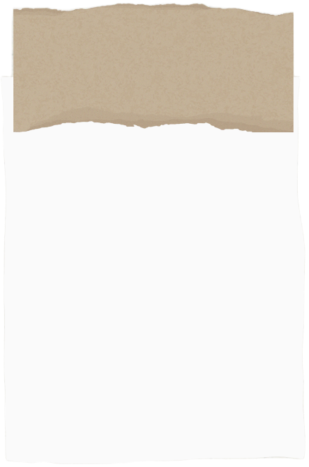
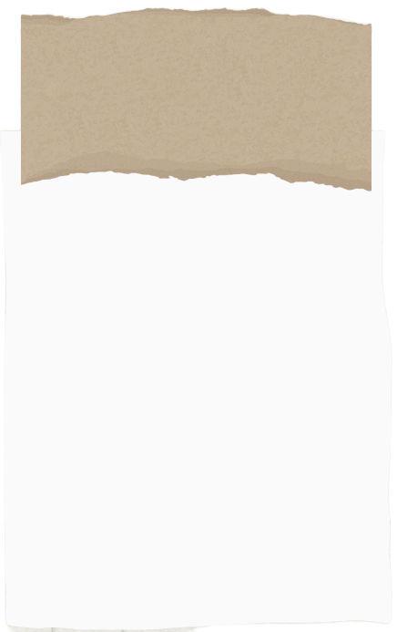
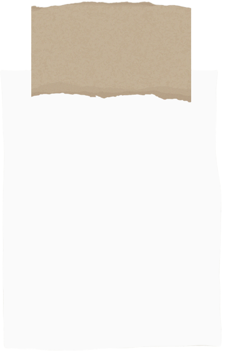

Diferenciais
- Produtos 100% feitos à mão
- Exclusividade (cada peça é única)
- Valor afetivo e emocional em cada criação
- Criatividade e originalidade

Missão e Visão
- Missão: Levar arte para a vida das pessoas em forma de presentes e decoração artesanal
- Visão: Ser referência em bordados artesanais pela originalidade e conexão com os clientes

Valores
- Artesanalidade
- Criatividade
- Afetividade
- Qualidade
- Diversidade